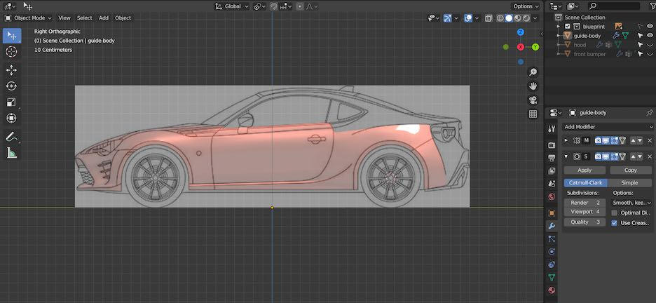
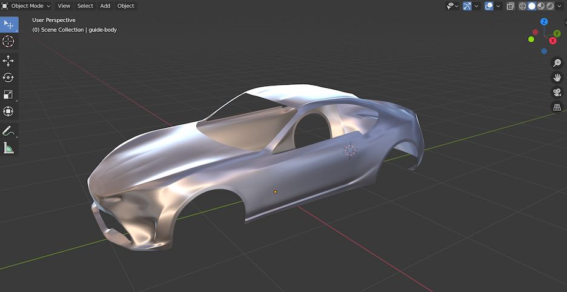
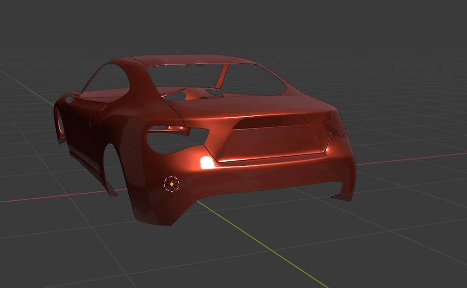
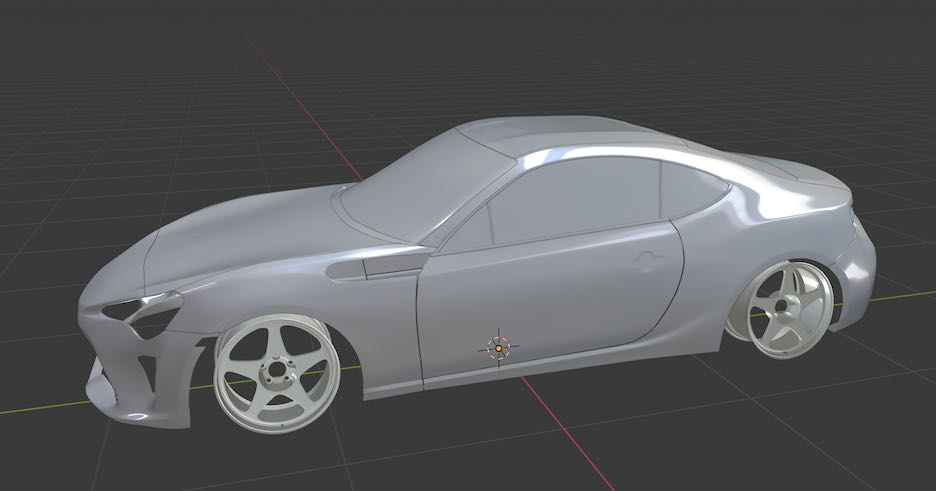
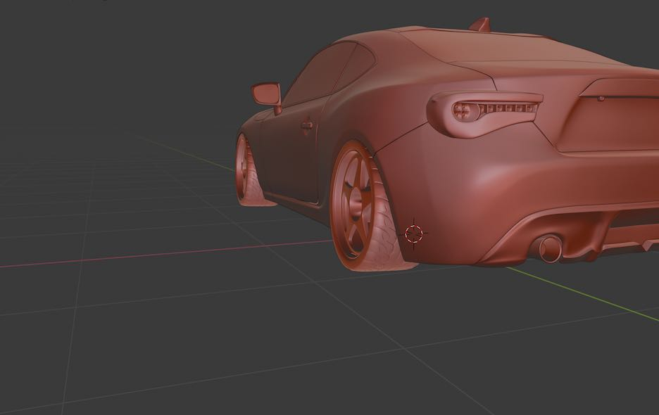
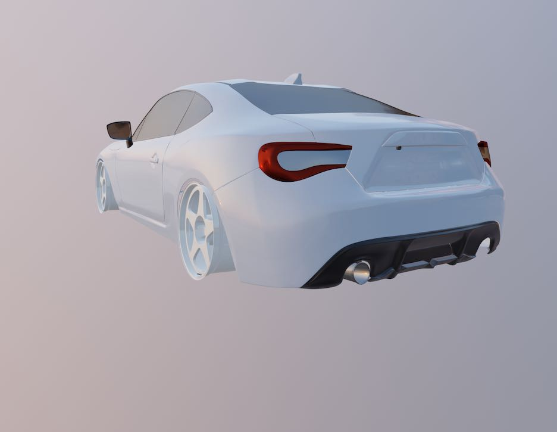
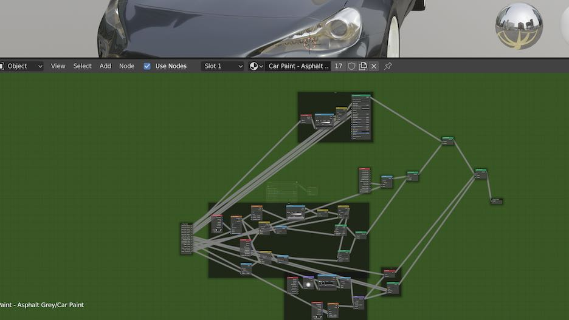
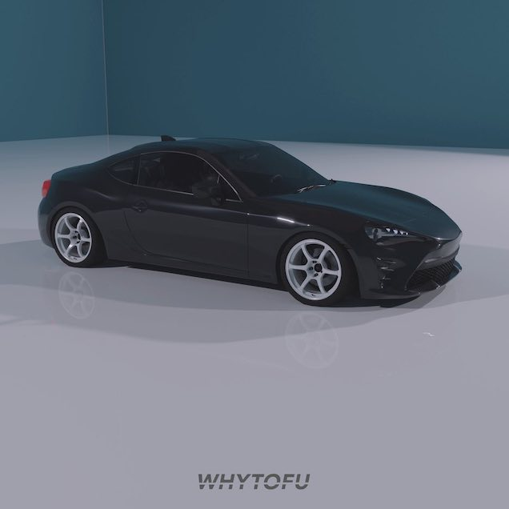
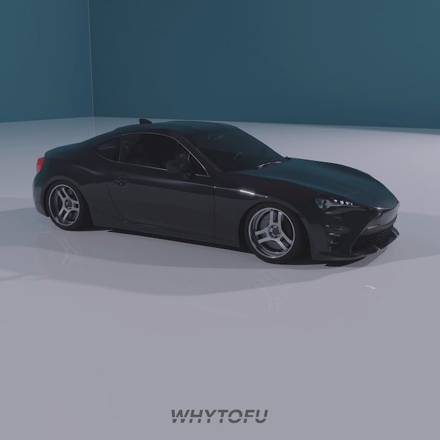
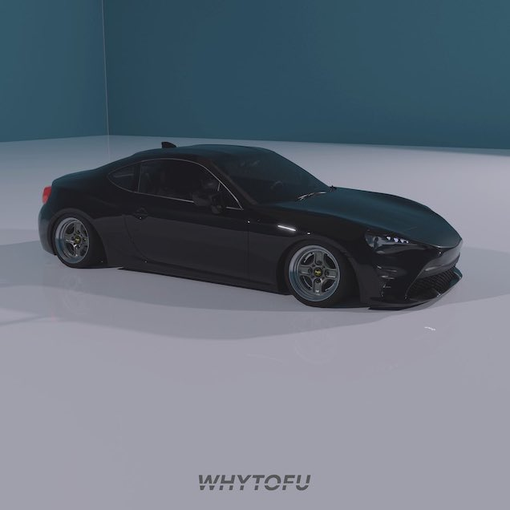

Purpose:
Moving to the next evolution of my personal side projects which is to create cars and transition the same concept into 3D modelling and rendering. While making any 2D car illustrations I always have a feeling that I’m putting all this work into one car but only limited to seeing one angle of it. This is where I am turning to 3D to be able to do more with the cars I create.
Process:
Following the C7 Corvette tutorial from CG Masters, I first tried to follow the tutorial scene by scene but I felt that I was not learning anything. I started over and decided to pick my favourite car, the Toyota 86, then use the same techniques from the video and apply it to my project.
1. Setup
- Blueprint placement
- Checking for accurate dimensions

2. Guide Body (For reflections)
- Creating a smooth exterior unibody for the reflections to pass through clearly
- Adding any creases or hardlines

3. Exterior Panels (Actual shape of the parts)
- Separtes into individual components (ie. Doors, Trunk, Bumpers)
- Wraps the guide body on top of the parts

4. Glass
- Window trims, borders, glass pieces

5. Lights
- Lens, housing, LED bulbs

6. Extra details (ie. side mirrors, grills, backup camera)

7. Material creation (body colours, plastics, tires, metals, glass, mirrors)

8. Rendering Environment
- Scene
- Lighting
- Render settings
- Adobe Photoshop filtering
Outcome:
By no means is the final results perfect but the Toyota 86 does have a lot of realism. Many of the rendering shots of the car look real which impressed me for my first attempt. I can see there is still room for improvement, but I am proud of what I achieved. With this base model completed I can start adding other modification for my own visualization. I have already started small with switching rare aftermarket wheels on this Toyota and seeing the different color combinations.
  
Biggest Challenges:
1. Exterior Panels
By grafting the guide body for reflection onto the actual parts shown, it was difficult to reshape the exterior panels. Whenever I tried moving vertices, the shape deforms, and I cannot get the pieces to look right. This meant I had to go back and forth reshaping the guide body which could have been avoided if I spent more time perfecting it before moving to individual panels.
2. Modelling the Lights
This was the worst part of the process to complete. I was stuck on trying to mold the housing of the headlight and taillight shapes to replicate the real car. I took a break and worked on other parts like material creation and when I came back, I finally made the housing good enough for me to call it done.
3. Material Creation
Following the tutorial, I was feeling that I was not understanding the tools and just following to complete the task. This was more difficult to apply technique on my own objects as I needed the same materials as the tutorial. Once I finished creating the same materials, I decided to make some aftermarket parts and find out the purpose of some basic material settings.
Takeaway:
I started with no knowledge of Blender and the techniques but deciding to do a car was the right move as many topics in 3D modelling is covered. Modelling a car from scratch is a jump right into the deep end but it is the subject I want to use 3D for. What particularly accelerated my learning is applying the techniques shown instead of copying the tutorial.
The whole experience taught me the patience I must have and to keep believing in yourself when learning something new. Also, I discovered that the workflow does not have to be linear and I can jump back and forth to take breaks when I get stuck.
As much as I want to make every car I make from scratch, it takes very long especially if other people with more experience have a full car asset already available. I would like to use my 3D modelling skills for smaller task such as car parts for modification and focus more on rendering or postproduction of the final picture.